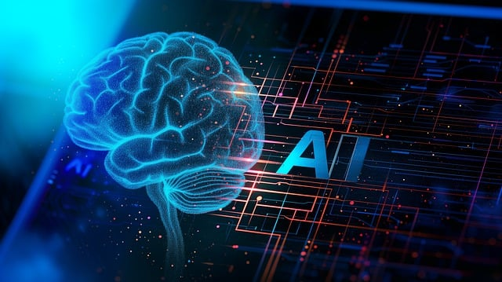

What is AI?
Artificial Intelligence (AI) refers to the simulation of human intelligence in machines that are programmed to think and learn like humans. Here is a link to more information about AI.
Applications of AI
AI is used in various fields, including:
- Healthcare
- Finance
- Transportation
- Entertainment
Benefits of AI
Some benefits of AI include:
- Automation of repetitive tasks
- Improved decision-making
- Enhanced customer experiences
AI in Multimedia
Additional Information
Artificial Intelligence is revolutionizing various industries by enabling machines to perform tasks that typically require human intelligence. From natural language processing to advanced robotics, AI is paving the way for innovative solutions and efficiencies that were previously unimaginable.
This paragraph highlights the transformational impact of AI. With bold advancements in machine learning and deep learning, AI continues to push the boundaries of what technology can achieve, making it an exciting field to watch and explore.